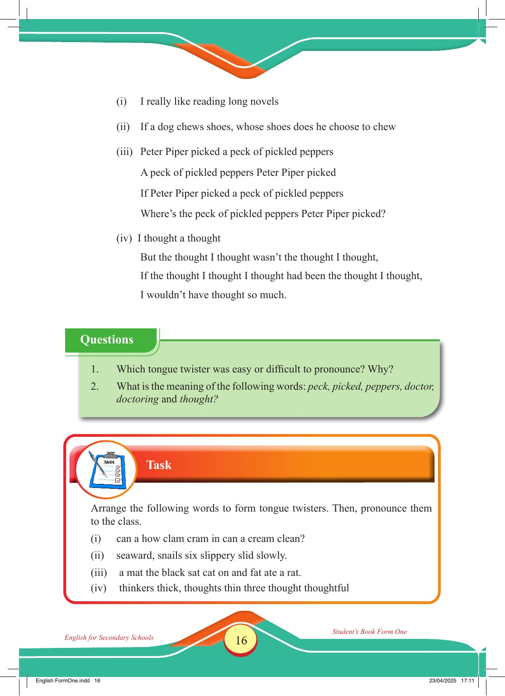

Accessible text transcript - page 16
Use the reader's read-aloud controls or select an individual segment below.
Printed book page 16. (i) I really like reading long novels (ii) If a dog chews shoes, whose shoes does he choose to chew (iii) Peter Piper picked a peck of pickled peppers A peck of pickled peppers Peter Piper picked If Peter Piper picked a peck of pickled peppers Where’s the peck of pickled peppers Peter Piper picked? (iv) I thought a thought But the thought I thought wasn’t the thought I thought, If the thought I thought I thought had been the thought I thought, I wouldn’t have thought so much. Questions box with two prompts: which tongue twister was easy or difficult to pronounce and why, and the meanings of the words peck, picked, peppers, doctor, doctoring, and thought. Questions 1. Which tongue twister was easy or difficult to pronounce? Why? 2. What is the meaning of the following words: peck, picked, peppers, doctor, doctoring and thought? Task box instructing students to arrange words to form tongue twisters and pronounce them to the class, followed by three scrambled lines beginning with “can a how clam cram…,” “seaward, snails six slippery…,” and “a mat the black sat cat…”. Task Arrange the following words to form tongue twisters. Then, pronounce them to the class. (i) can a how clam cram in can a cream clean? (ii) seaward, snails six slippery slid slowly. (iii) a mat the black sat cat on and fat ate a rat. (iv) thinkers thick, thoughts thin three thought thoughtful Return to the page image